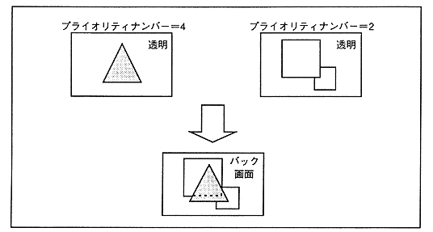

Figure 3.21 Color operation function

The line color screen is a screen that forcibly inserts the specified image as the second image of the top image and performs color calculations. At that time, in the part where the line color screen is inserted, the second image before insertion becomes the third image, and the third image becomes the image below it (force image). Figure 3.22 shows the insertion of a line color screen.